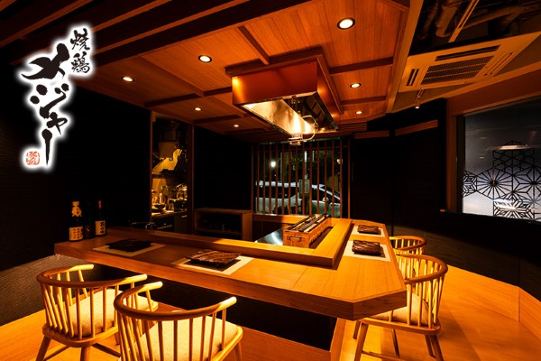
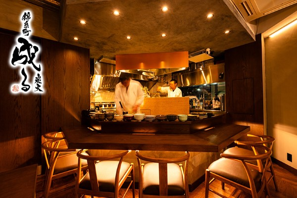
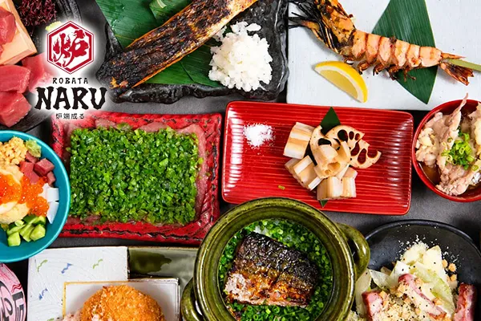
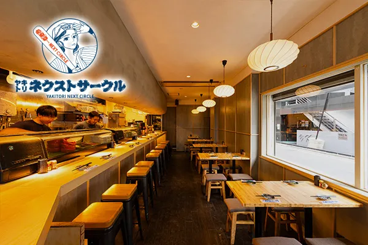

マグロと炉端 成る
目の前で豪快に焼き上げる炉端料理とマグロを使った見た目から味までこだわっている料理が自慢の居酒屋です。
- ■住所
- 東京都墨田区江東橋4-5-5
トーア錦糸町1F - ■電話番号
- 03-6666-9372
目の前で豪快に焼き上げる炉端料理とマグロを使った見た目から味までこだわっている料理が自慢の居酒屋です。

捨てる部分がないと言われているマグロを焼肉、刺身、煮付けなどバラエティ豊富な調理方法でご提供している居酒屋です。

「焼き鳥の新基準を作る」をコンセプトに、こだわりの炭火で焼いた焼き鳥をご提供いたします。

美味しい海鮮、和食を食べたい皆様に。「日本の旨い」が食べられる大人の隠れ家。

豊洲直送の鮮魚を“おかもち”から選び、福井の産直米を土鍋ご飯でいただく「米と魚と炉端」のお店。
